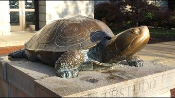

Heather Sulier

Hello! Here is me during my internship with NASA Goddard Space Flight Center.
Roles
NASA Student Intern: Archivist
Format, Manage, and Take care of NASA Goddard Space Flight Center Archives
Assist archival staff in preserving and providing access to historical material relating to the Center
Input metadata into the Access to Memory (AtoM) System for describing archival content
Perform digital preservation tasks using BitCurator and Archivematica software
Student at the University of Maryland, College Park
Senior in the Information Science Undergrad Program
Expected Graduation: December 2020
Goals to obtain the Data Science Specialization
Member of the Phi Theta Kappa Honor Society
Daly Computers, Inc
Promoted Team Lead Role
Led a team of 11 installers in supporting the Anne Arundel County Public Schools Technology Refresh Contract, covering 80+ schools
Monitored and evaluated installer’s performance; collaborated with 3 fellow team leads to conduct performance reviews
Executed basic troubleshooting for computer system performance